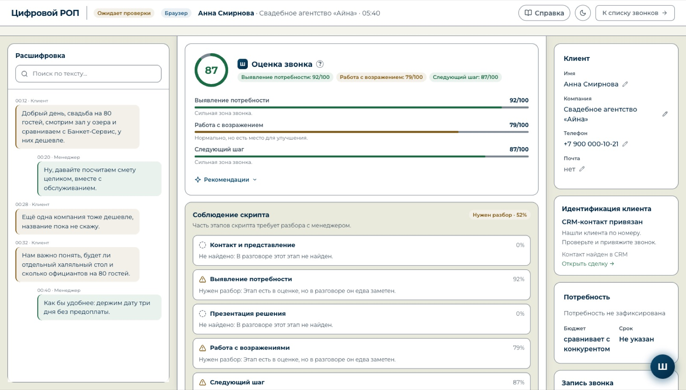
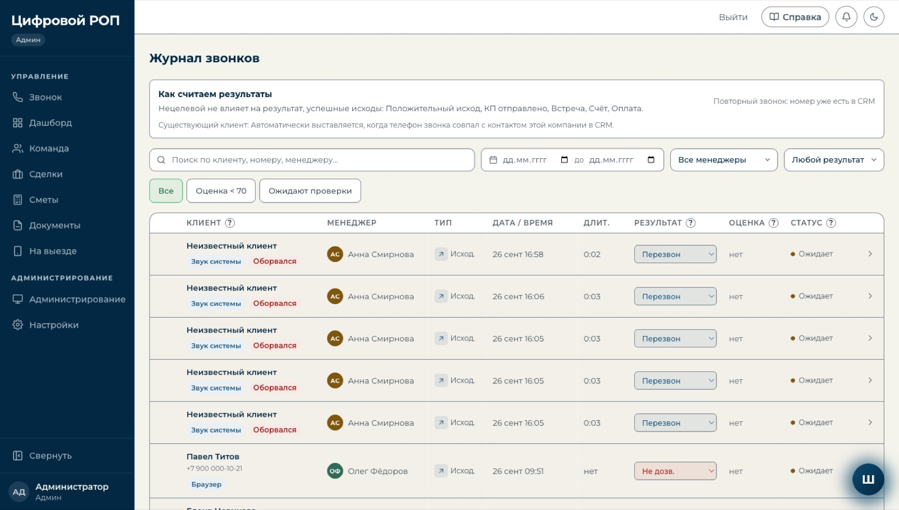
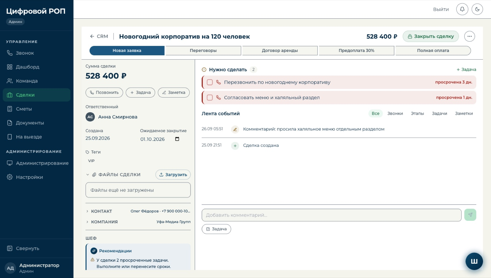

на боевом сервере клиента с 15.09
Цифровой РОП: каждый звонок разобран и оценён.
Для отдела продаж. Звонки менеджеров сами расшифровываются, оцениваются по скрипту компании и попадают в сделку с советом, что делать дальше.
533звонка обработано на сервере клиента к 18.09
159полных разборов с оценкой
91,9%точность разметки ролей в звонке
распознавание речисвоя модель на сервере клиентаCRM152-ФЗ


